QUIZ 6B
Answer the following questions based on the given loaded loop-gain of an amplifier in feedback. Assume that a positive, purely real feedback factor F is used. Always answer with at least 4 significant digits.
Contents
Given 1
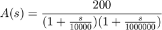
figure(1); hold on; s = tf('s'); % Parameters poles = [10^4 10^6]; openLoopGain = 200; % Feedback Factor F = (( (poles(1)+poles(2))^2 / (4*poles(1)*poles(2)) )-1) / openLoopGain; % Loop Gain T = openLoopGain * F; % Closed Loop Gain closedLoopGain = openLoopGain / (1+T); % Absolute frequency where coincident poles occur pole_ClosedLoop_Critical = (poles(1)+poles(2)) / 2; % Bode Plot (Open-Loop) H_open = openLoopGain / ( (1+s/poles(1)) * (1+s/poles(2)) ); bode(H_open); % Bode Plot (Closed-Loop) H_closed = closedLoopGain / ( (1+s/(pole_ClosedLoop_Critical) )^2 ); bode(H_closed); % Bode Plot (Feedback Factor) bode(1/F, 1, 'g'); hold off;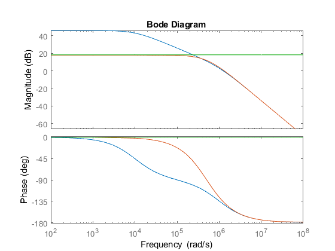
- What is the open-loop DC gain? 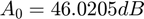
- What is the open-loop bandwidth? 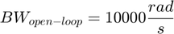
- What is 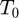 (in linear value) such that the closed-loop poles are coincident? 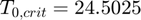
- What is the DC closed-loop gain in dB with 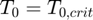? 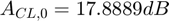
- At what absolute frequency will the coincident poles occur? 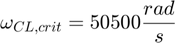
- What is the closed-loop bandwidth with the poles being coincident? 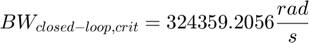
Given 2
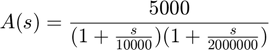
figure(2); hold on; s = tf('s'); % Parameters poles2 = [10^4 2*10^6]; openLoopGain2 = 5000; % Feedback Factor F2 = (( (poles2(1)+poles2(2))^2 / (4*poles2(1)*poles2(2)) )-1) / openLoopGain2; % Loop Gain T2 = openLoopGain2 * F2; % Closed Loop Gain closedLoopGain2 = openLoopGain2 / (1+T2); % Absolute frequency where coincident poles occur pole_ClosedLoop_Critical2 = (poles2(1)+poles2(2)) / 2; % Bode Plot (Open-Loop) H_open2 = openLoopGain2 / ( (1+s/poles2(1)) * (1+s/poles2(2)) ); bode(H_open2); % Bode Plot(Closed-Loop) H_closed2 = closedLoopGain2 / ( (1+s/(pole_ClosedLoop_Critical2) )^2 ); bode(H_closed2); % Bode Plot (Feedback Factor) bode(1/F2, 1, 'g'); hold off;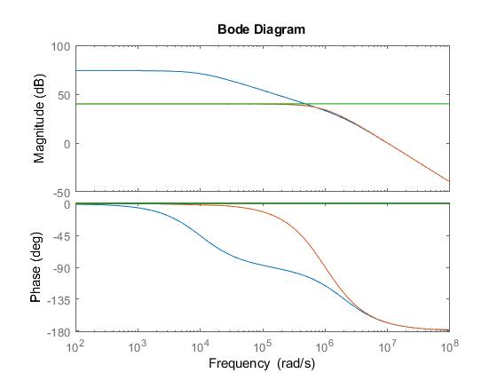
- What is the open-loop DC gain? 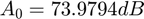
- What is the open-loop bandwidth?
- What is (in linear value) such that the closed-loop poles are coincident? 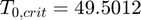
- What is the DC closed-loop gain in dB with ? 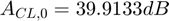
- At what absolute frequency will the coincident poles occur? 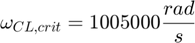
- What is the closed-loop bandwidth with the poles being coincident? 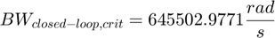